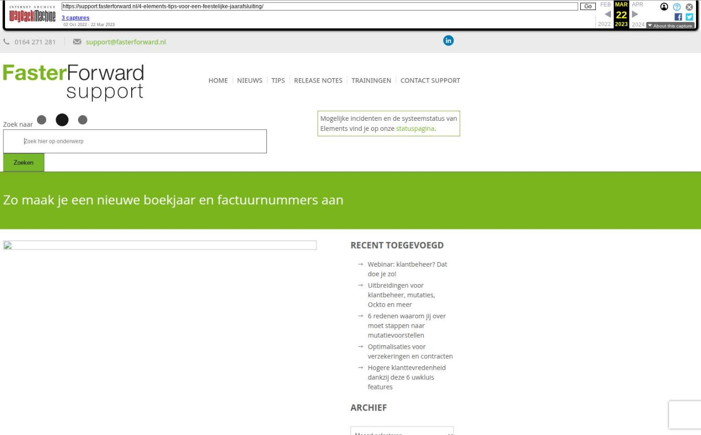

Zo maak je een nieuwe boekjaar en factuurnummers aan

Tekstinhoud
Title: Zo maak je een nieuwe boekjaar en factuurnummers aan - Faster Forward Support
URL: https://web.archive.org/web/20230322010254/https://support.fasterforward.nl/4-elements-tips-voor-een-feestelijke-jaarafsluiting/
Source element: <article>
---
1. Verstuur een kerst- of nieuwjaarswens
Je klanten en relaties een fijne feestdagen of een gelukkig nieuwjaar wensen? Met de generieke rapportage 'CRM – Klanten o.b.v. dossier' selecteer je eenvoudig alle klanten in de campagnemanager.
MEER OVER DE CAMPAGNEMANAGER
2. Sluit het boekjaar 2022 af
Voordat het boekjaar gesloten kan worden dient het volgende boekjaar geopend te zijn. Dit nieuwe boekjaar is nodig om de openingsbalans te kunnen boeken en om te voorkomen dat er in het geheel geen boekingen meer gemaakt kunnen worden. Doorloop de volgende stappen:
Ga rechtsboven onder het menu 'Financieel' naar 'Periodes onderhoud' onder 'Stamgegevens';
Klik op het 'plus-icoon' om een nieuw boekjaar aan te maken;
Voer '2023' in en sla de nieuwe periode op.
Let op: alleen gebruikers met beheerrechten kunnen een nieuw boekjaar openen.
BEKIJK DE VOLLEDIGE UITLEG
3. Maak nieuwe factuurnummers aan
Nadat je een nieuw boekjaar heeft aangemaakt, maak je een nieuwe factuurreeks aan. Volg hiervoor de volgende stappen:
Ga rechtsboven onder het menu 'Financieel' naar 'Overzicht factuurnummers' onder 'Facturen';
Vul een nieuwe factuurreeks in achter het jaar '2023';
Sla de nieuwe factuurreeks op door op het groene vinkje te klikken.
Meer informatie vind je in het onderstaande kennisartikel.
MEER INFORMATIE
4. Stel je afwezigheidsassistent in tijdens je vrije dagen
Ben je vrij tussen kerst en nieuwjaar? Stel dan je afwezigheidsassistent in. Zo weten e-mailers direct dat je afwezig bent.
Ga naar de e-mailmodule;
Ga naar de 'Postvak In' van het e-mailadres waarvoor je de assistent wil instellen;
Klik onder het 'Hamburgermenu' (3 streepjes) op 'Afwezigheidsassistent';
Klik op het 'plus-icoon' om een nieuwe afwezigheidsassistent toe te voegen;
Vul de naam, periode, handtekening en het bericht in;
Geef vervolgens aan dat de afwezigheidsmelding één keer naar een afzender moet gaan. Als je dit niet doet, kan er een oneindige reeks aan afwezigheidsmails ontstaan.;
Sla op door op het groene vinkje te klikken.
Geplaatst op 1 november 2022 (Laatste update: 26 januari 2023)